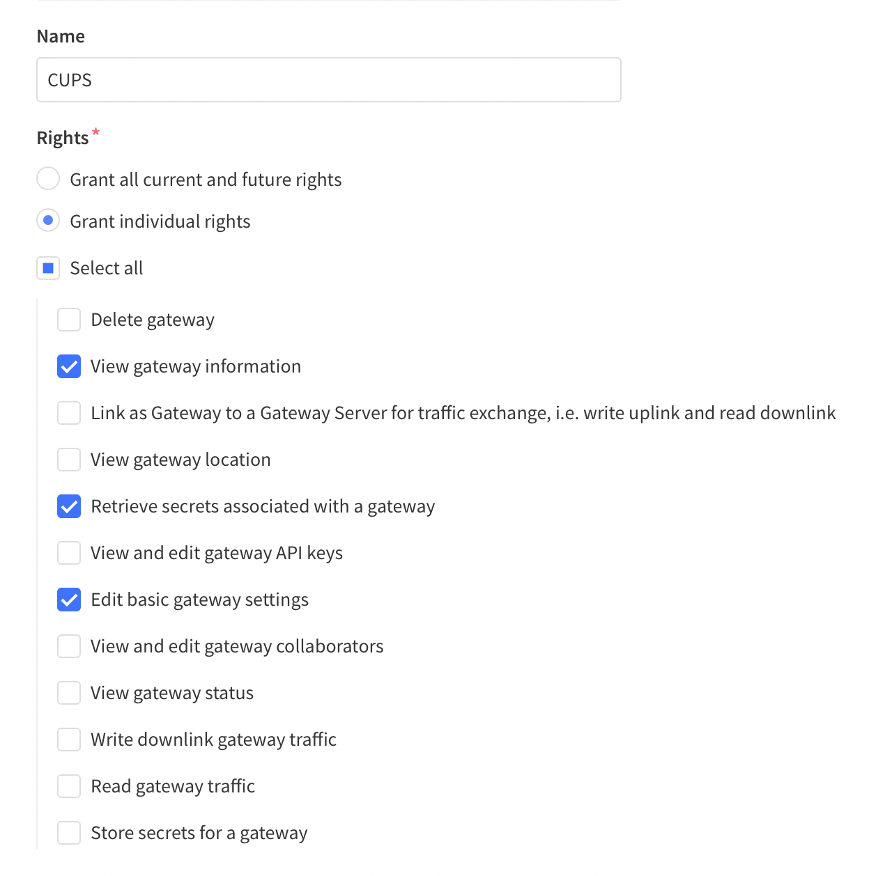
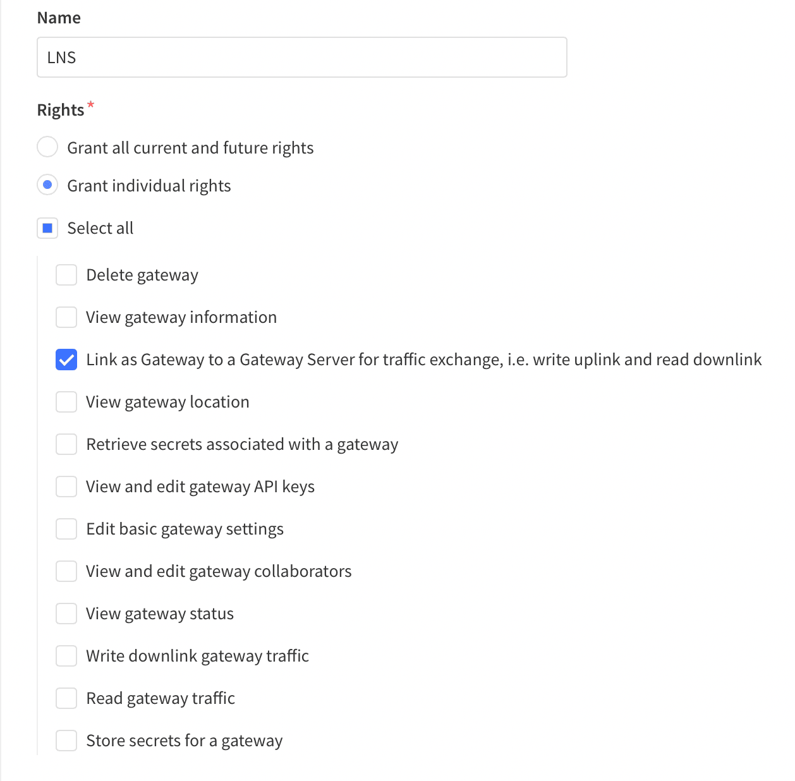
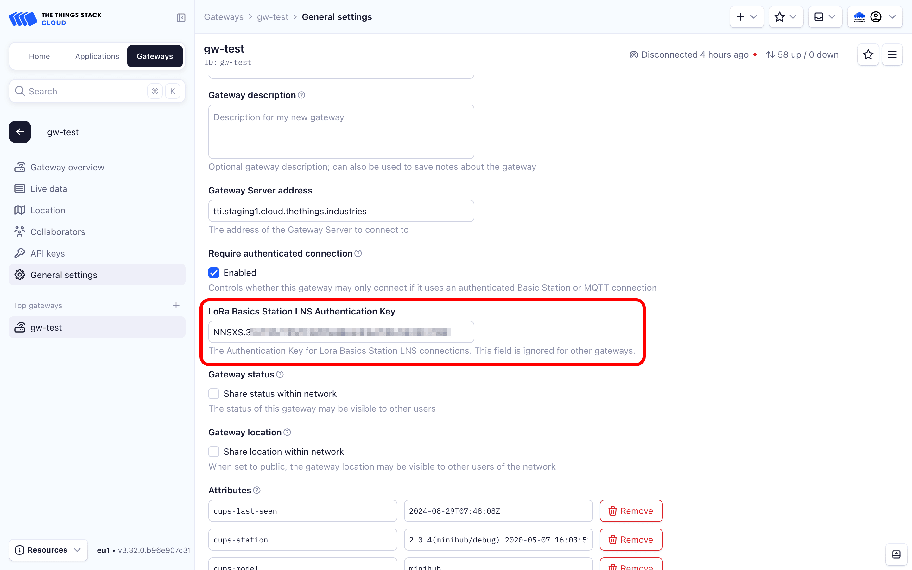

Configuration and Update Server (CUPS)
LoRa Basics™ Station can regularly connect to a Configuration and Update Server (CUPS) server to check for configuration and software updates. This page contains information about connecting your gateway to The Things Stack to support remote management via the CUPS Protocol.
Warning:
Configuring CUPS automatically retrieves LNS credentials and configures LNS on your gateway. If you configure CUPS, your gateway will override LNS credentials in case of successful CUPS connection.Requirements
- User account on The Things Stack with rights to create gateways.
- A gateway which supports LoRa Basics™ Station.
Create a Gateway
To connect a gateway using the CUPS protocol, you must first add the gateway in The Things Stack. This can be done either in the console, or via the command line. See instructions for Adding Gateways.
Create Separate CUPS and LNS API Keys
Since CUPS automatically configures LNS, you will need two API keys.
CUPS requires an API key for your gateway with the following rights:
- View gateway information
- Edit basic gateway settings
- Retrieve secrets associated with a gateway

LNS requires an API Key with the following rights:
- Link as Gateway to a Gateway Server for traffic exchange, i.e. write uplink and read downlink

To create these API keys for your gateway, follow instructions for Creating a Gateway API key.
Configure CUPS to Send the LNS API Key
We need to configure CUPS in The Things Stack to transmit the LNS API key when a gateway connects. To do so in the Console, go to the General Settings page of your gateway.
In the LoRa Basics Station LNS Authentication Key field, paste the LNS API key you generated in the previous step.

Press Save Changes to update the gateway settings. When your gateway connects to CUPS, The Things Stack will send the LNS configuration settings and API key.
We need to configure CUPS in The Things Stack to transmit the LNS API key when a gateway connects. Use the following command to do so, replacing "your-gateway-id" with your gateway ID in The Things Stack and "your-lns-api-key" with the LNS API key you created in the last step:
GTW_ID="your-gateway-id"
LNS_KEY="your-lns-api-key"
SECRET=$(echo -n $LNS_KEY | xxd -ps -u -c 8192)
ttn-lw-cli gateways update $GTW_ID --lbs-lns-secret.value $SECRET
Note:
If you receive an error runningttn-lw-cli gateways update, you may need to update the CLI. See instructions in Installing the CLI.
If successful, you should receive a response as follows:
Show CLI output
{
"ids": {
"gateway_id": "<gateway-id>"
},
"created_at": "2020-10-13T10:49:02.730Z",
"updated_at": "2020-11-17T14:52:06.440Z",
"version_ids": {},
"lbs_lns_secret": {
"key_id": "is/gateway-secrets-encryption-key",
"value": "<encrpyted-base64-lns-api-key>"
}
}
Configure Gateway
All LoRa Basics™ Station gateways support the following configuration options. Consult your gateway documentation for more information about configuring your specific gateway.
CUPS Server Address
The server address is the network endpoint of The Things Stack CUPS. It is a combination of the protocol (https), the server address, and the port.
Enter the following in your gateway as CUPS Server Address: https://<server-address>:443.
The <server-address> is the address of your The Things Stack deployment. See Server Addresses for more info.
CUPS Server Certificate / CUPS Trust
This is the CA certificate which secures your domain. A .pem file containing common certificates is available in the Root Certificates Reference.
Upload the .pem file in your gateway as the CUPS Server Certificate, i.e. CUPS Trust.
CUPS Key File
This is a file which The Things Stack uses to verify the identity of your gateway.
Instructions below show how to create a file called cups.key, replacing "your-cups-api-key" with the CUPS API key you created above.
On Linux or macOS use the following commands:
CUPS_KEY="your-cups-api-key"
echo "Authorization: Bearer $CUPS_KEY" | perl -p -e 's/\r\n|\n|\r/\r\n/g' > cups.key
On Windows, you can use Command Prompt:
set CUPS_KEY=your-cups-api-key
echo Authorization: Bearer %CUPS_KEY% > cups.key
or PowerShell:
$env:CUPS_KEY='your-cups-api-key'
write-output "Authorization: Bearer $env:CUPS_KEY" | set-content cups.key
The commands above create a file called cups.key, terminated with a Carriage Return Line Feed (0x0D0A) character. Upload this file in your gateway as the CUPS key.
If the connection is successful, the CUPS server will send the LNS Server Address, LNS Trust and the LNS API Key to the gateway and it will automatically attempt to connect to the LNS Server.